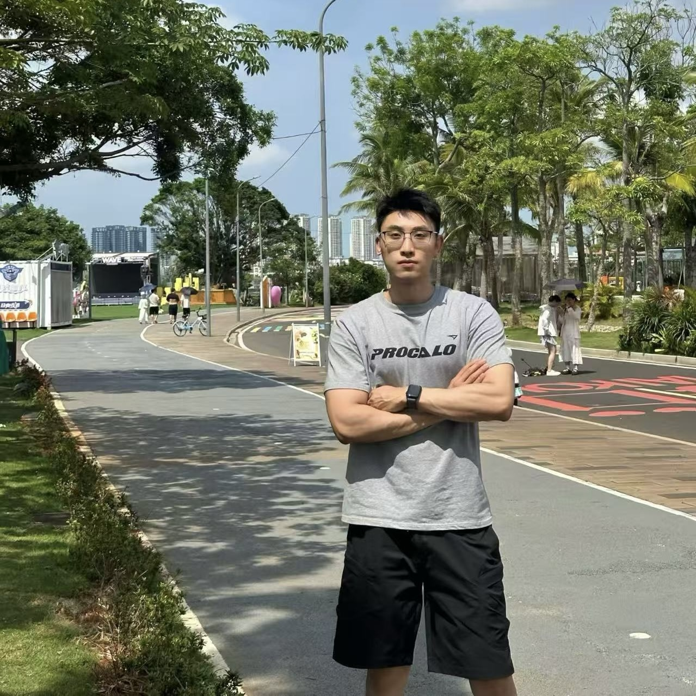

Google Scholar
Google Scholar
 GitHub
GitHub

Biography
I am a Senior Researcher at WeChat Vision, Tencent, working on multimodal foundation models. My research interest covers the full training stack — from large-scale pretraining to post-training optimization for models that perceive, reason, and act across image, video, audio, and language.
I received my Ph.D. from The Chinese University of Hong Kong, Shenzhen, advised by Prof. Ruimao Zhang and Prof. Zhen Li. During my Ph.D. (2021–2025), I worked toward intelligent agents that can collaborate with humans in dynamic environments, exploring three closely connected directions: (1) human-centric visual understanding and reasoning, with a focus on interpreting human states, behaviors, and intentions; (2) omni-modal scene perception, integrating diverse modalities to make sense of complex real-world scenes; and (3) behavior planning and decision-making, enabling agents to act upon what they perceive and understand.
News
- One paper is accepted to NeurIPS 2025.
- We present WeThink for general-purpose vision-language reasoning.
- One paper is accepted to T-PAMI.
- One paper is accepted to CVPR 2025.
- One paper is accepted to ICRA 2025.
- One paper is accepted to NeurIPS 2024.
- Grounding DINO is selected as The Most Influential Paper in ECCV 2024.
- Three papers are accepted to ECCV 2024.
- One paper is accepted to CVPR 2024.
- We present X-Pose to detect any keypoints of any objects.
- Grounded SAM is accepted to ICCV 2023 Demo Track.
- One paper is accepted to ICCV 2023.
- Two papers are accepted to MIDL 2023, one rated as oral presentation.
- One paper is accepted to CVPR 2023.
- One paper is accepted to ICLR 2023.
- One paper is accepted to NeurIPS 2022.
Selected Publications [Full list on Google Scholar]
# corresponding author
Academic Services
Conference & Journal Reviewer
Challenge Organizer
Honors & Awards
- 🏆The First Prize Scholarship · 2018, 2019, 2020
- 🏆National Scholarship · 2018